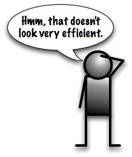
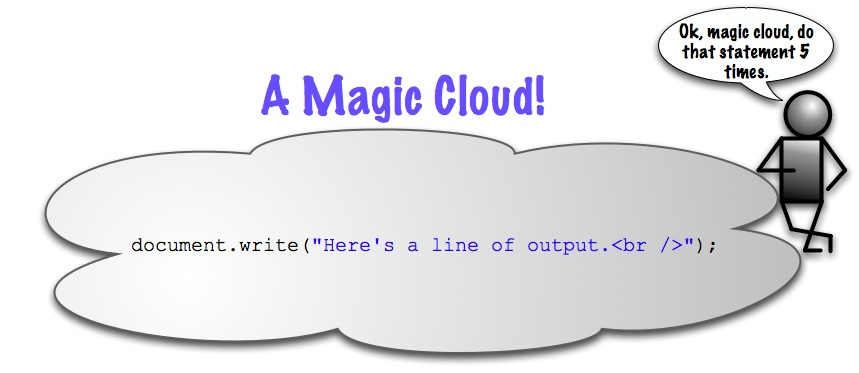
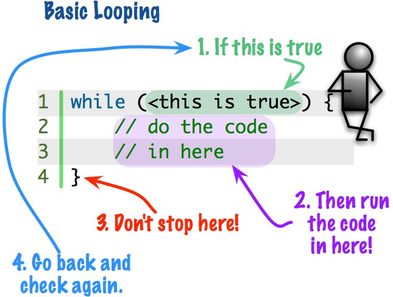

Learning Unit 4
Learning Unit 4Repetition
File: unit4/repetition.html
Repetition is the last of three main computer concepts that we're learning. Sequence, Selection, and now Repetition.
Readings
- JavaScript Step by Step
- Chapter 6: Controlling Flow with Conditionals and Loops (pages 114-124)
Repetition means Looping
In programming we always use a loop when we want our program to repeat something.
- What if you want to have a piece of code that does the same thing 5 times?

- That really doesn't seem like a good idea. What if you wanted more statements that were the same? What if you didn't know how many statements you wanted?
- Maybe some magic?

- Well, we don't need a magic cloud, we have looping.
- That's interesting, it looks like the number of times the statement will be run is only dependent on a single number:
5. - If we change that number it will run that many times.
- This is looping.

Another Demo
Looping Structures
- We have two main looping structures that we're going to learn in this course.
- Leading Decision Loop
- Counted Loop
Leading Decision Loop
Make the decision first.
- We saw this code earlier in the semester
- What we didn't emphasize is that
(condition)is tested first, before the code inside the loop is run. If the condition is true then the code is run. - After all the statements in the loop are run then
(condition)is tested again. If it is still true then the code in the loop is run again. - Then the condition is tested again and we loop, until
(condition)has changed to not being true.
Counted Loop
Repeat ten times.
- The concept of counted looping is simple, you do something a specified number of times. There are different ways to specify the number. Here's the first way in code using a
whileloop:
- We create a variable and initialize it to 0.
- We start the loop by testing our variable against the number of times we want to loop. In this case we want to loop 10 times.
- Then we run the statement block, this will be our working code.
- At the end of the loop we have to add 1 to our "counter" variable. If this step is forgotten our loop will run forever.
- But, this is not most common use of the
whileloop in programming. It is better suited for loops where we don't know how many times it's going to run. For a counted loop in JavaScript we usually use this:
- This does exactly the same thing as the previous
whileloop. However, managing the loop counter is built in, you can't forget to have the counter variable or it won't run. - We'll come back to this loop in more detail later but here are basics of how it works.
- The
forhas three parts in between the parentheses, intialization, test, increment. - (
loopCounter = 0;loopCounter < 10; loopCounter++) - First the counter variable is set to zero. This happens only once before the loops starts. - (loopCounter = 0;
loopCounter < 10;loopCounter++) - This middle part is the test, it's just the same as inside awhileloops parentheses. - (loopCounter = 0; loopCounter < 10;
loopCounter++) - At the end is the increment step. This is run after the loop statements are run.
- The
- This loop is more concise and is preferred when we know how many times a loop should be run.
Some Labs to keep your blood flowing
The best writing is rewriting. -E. B. White